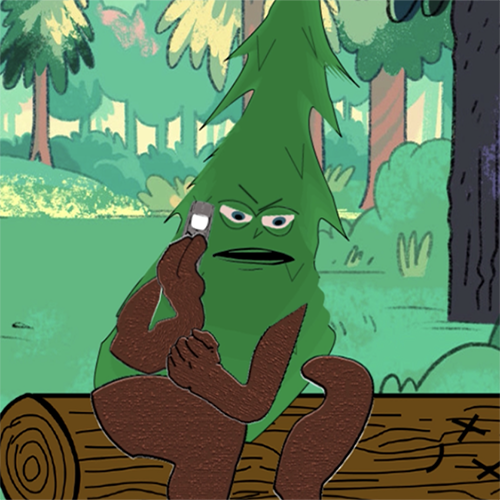
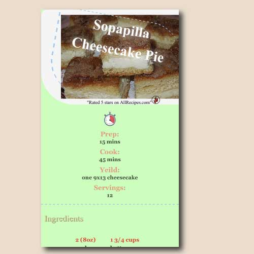

Projects
Filter by:

Design
"Mamba"
Made with: After Effects, Fresco
I made this short rotoscope animation in Spring 2020 for my 2d animation class. In total there were over a hundred separate drawings.

Design
"Treeman Cometh"
Made with: After Effects, Illustrator, Animate, Fresco, Premiere Pro
This is a short animation I did with lip-synching to audio for my 2d animation class.

Develop
"Recipe Project"
Made with: HTML5, CSS3, Css Grid
I made this fully responsive recipe webpage with Css Grid in my multimedia authoring class.
Design
"Second Step Housing PSA"
Made with: After Effects, Illustrator, Premiere Pro
This is a video public service announcement made for the Second Step Housing non-profit in Fall '19.